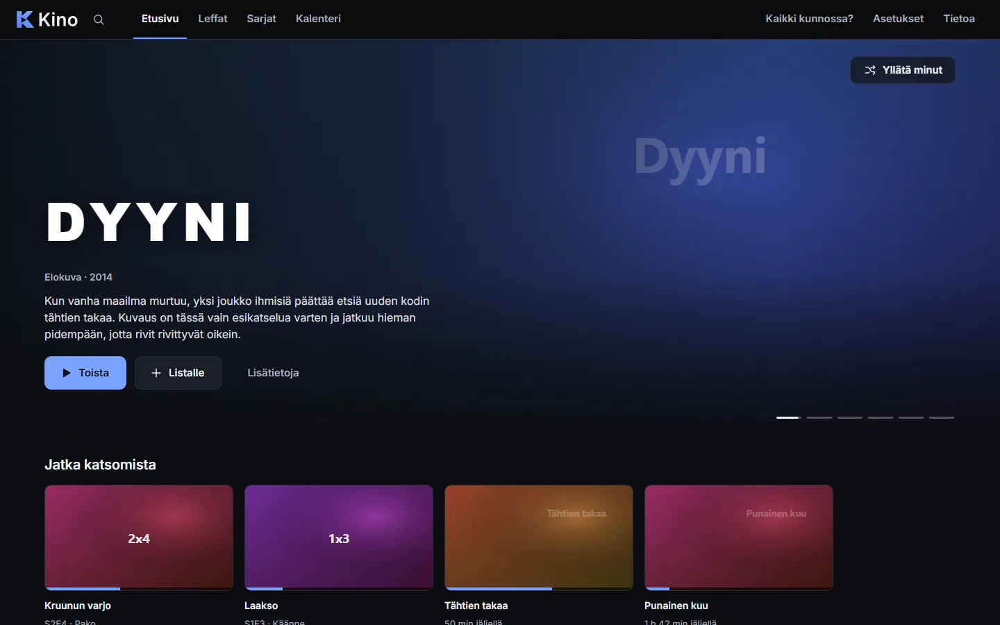
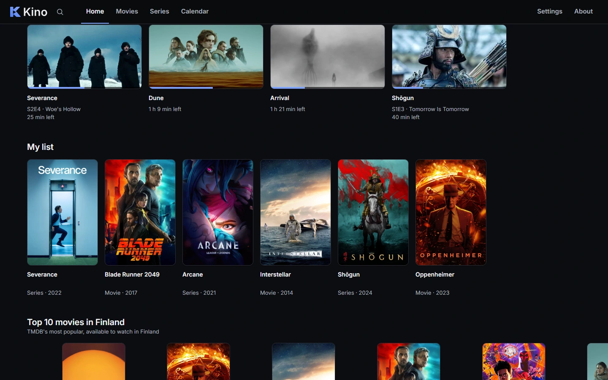
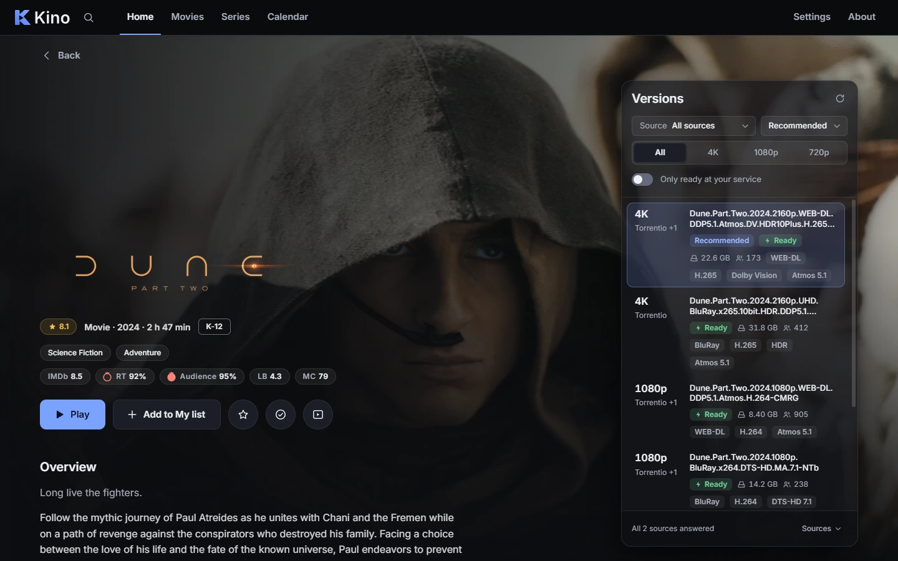
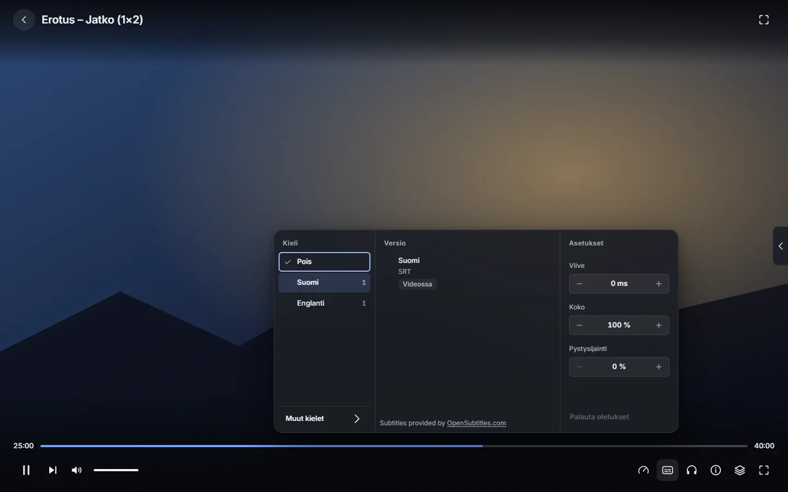
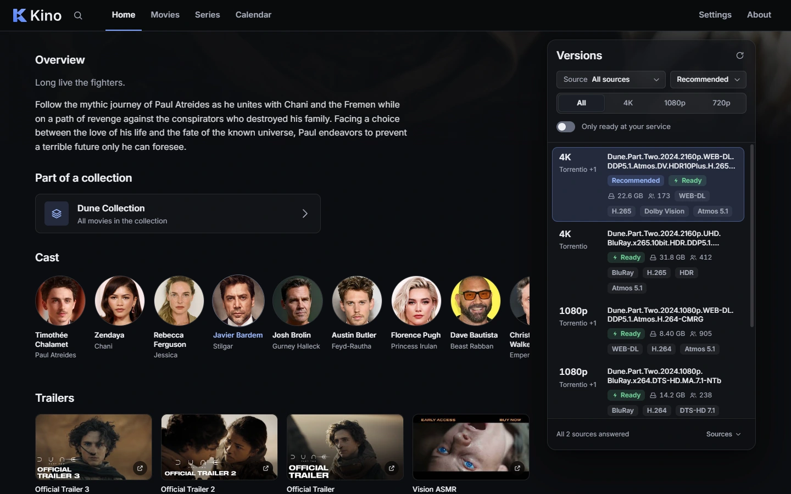

Movies and series. One app.
Kino looks up any title, finds the best version and plays it in its own player with subtitles. Pick up where you left off, skip intros and let Kino update itself.

Every poster and backdrop on this page comes from TMDB.
Everything worth watching, one screen.
A home page that fills itself with what's trending, what you left half-watched and what fits the genres you like. Search suggests as you type, and Surprise me picks for you when you can't decide.
- Continue watching, My list and genre shelves
- Movies and Series pages with filters and top lists
- Search with suggestions and recent searches

The best version is picked for you.
Kino asks every source for versions and puts the one that is ready in your service and fits your quality first. You can always pick another.
- 4K, 1080p and 720p in one click
- Real-Debrid, AllDebrid, TorBox and more, several at once
- If a version stutters, Kino suggests a lighter one

Subtitles and a proper player.
Kino fetches subtitles from several services and picks your language and the best match. If a subtitle fails to load, Kino automatically tries the next one in the same language.
- Delay, size and position right in the player
- Skip intros, recaps and end credits
- Night mode evens out the sound for late viewing

Everything about a title in one place.
Cast with photos, trailers, collections, details and scores from several sites, all on the same page as the Play button.
- Optional IMDb, Rotten Tomatoes, Letterboxd and Metacritic scores
- Open a collection, an actor or a director to keep exploring
- Rate titles and mark them watched

Small things that add up.
Pick up where you left off
The next episode is ready when the last one ends.
Calendar
New episodes in one view, with a Windows notification.
Trakt
Watched, your list and ratings stay in sync everywhere.
Updates itself
A new version shows up in the top bar. One click and done.
Keyboard and remote
Arrow keys and Enter work on every page, even from the couch.
Keys kept safe
Your service keys are stored in Windows' own credential store.
English and Finnish
The whole app, and your titles' details, in either language.
Subtitle translation
Translate a subtitle right on your own PC, no cloud needed.
Three steps to watching.
Download and install
Open the downloaded file. If Windows warns about an unknown publisher (SmartScreen), choose
More infoand thenRun anyway.Go through the setup
Kino asks for your languages and services. Each step has a button to create an account and a hint on where to find the key.
Press Play
Pick a movie or series. Kino handles the version and subtitles, and updates arrive inside the app from now on.
Release notes
The release notes are written in Finnish.
- Uusi aloitusintro: Kino-logo näkyy hetken, ja sillä aikaa etusivu latautuu valmiiksi taustalla, joten mikään ei lataudu silmien edessä
- Asetusten haku toimii nyt oikeasti ja näyttää vain hakua vastaavat asetukset
- Uusi asetus "Pakota haetut tekstitykset" (Kielet ja laatu): tiedoston omia tekstitysraitoja ei käytetä, vaan teksti haetaan aina tekstityspalveluista